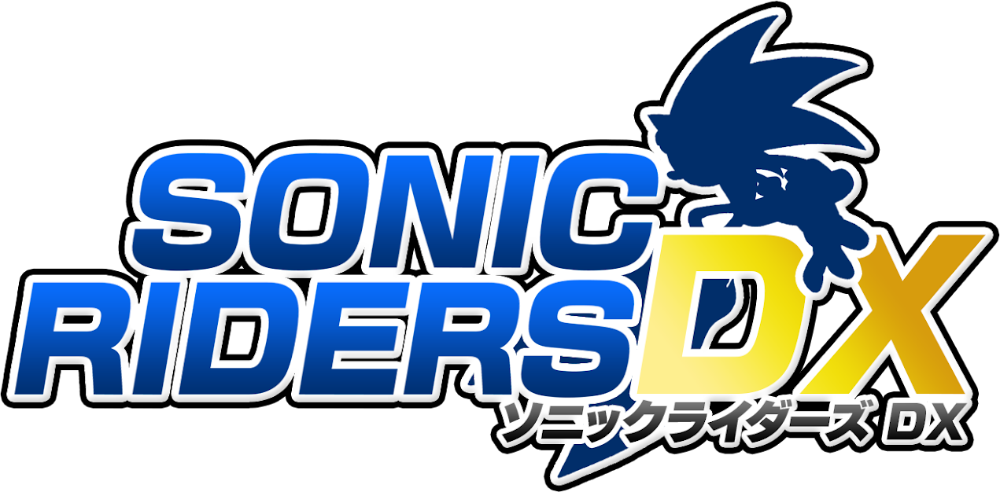
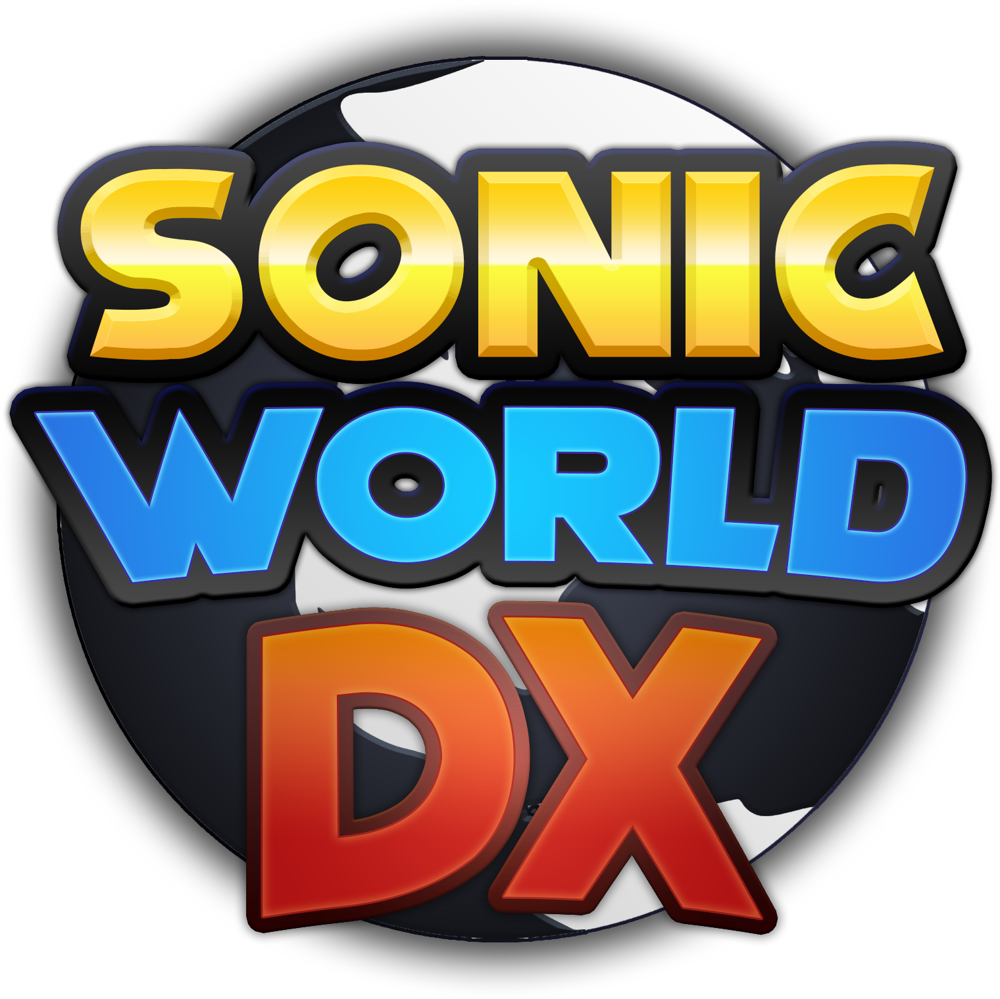
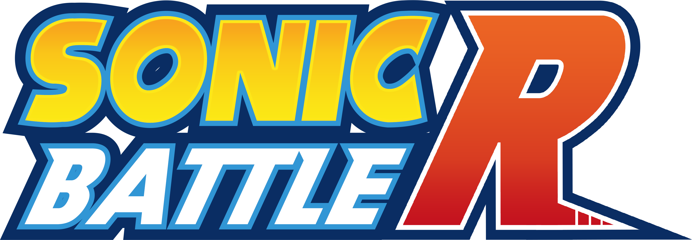

Durante a era clássica, diversos jogos da franquia foram lançados, mas não tiveram tanto destaque assim. Mas isso não quer dizer que a qualidade desses jogos é inferior aos jogos principais! Essa página mostra a melhor forma de jogar esses jogos, além de mostrar jogos criados por fãs que tentam simular o estilo desses jogos.

Sonic Riders DX é um mod para Sonic Riders de Gamecube que rebalancia o jogo e adiciona novos personagens. É necessário ter uma cópia da versão de Gamecube do jogo com o formato ".iso"
Página do jogo
Instruções de instalação:
1.) Executar Sewer56.Patcher.Riders.exe
2.) Clique em "Elevate our Experience!" e depois em "OK"
3.) Selecione o arquivo ".iso" do Sonic Riders que você possui
4.) Seperar até o programa criar o arquivo modificado
Chao Garden Island é um jogo "2.5D" focado no Chao Garden, com diversas frutas, minigames, personagens e Chaos!

Sonic World DX é um jogo que tenta simular as físicas da série Adventure, com diversos personagens, fases, e até um Chao Garden!
Baixe a versão 1.2.4, e o hotpatch 1.2.7, extraia os dois arquivos e coloque os arquivos do hotpatch na pasta da versão 1.2.4 e substitua os arquivos se pedidos.

Sonic Battle R é um fan game em desenvolvimento em que você pode jogar 56 fases da franquia com as mecanicas da série Adventure, podendo competindo com até 32 jogadores online!